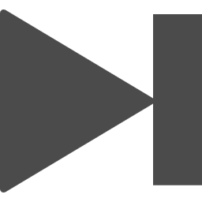
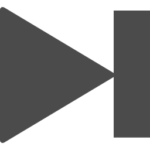

千両役者
King Gnu
- ♡
- ♥

 

出鱈目な劇を繰り返して
筋書きは何時も無理矢理で
命を継ぎ接ぎ
迷路の先は何時も振り出し
吊り橋を渡れ剥き出しで
のらりくらり千鳥足で
命の駆け引き
くたばりゃ最後
死人にゃ口無し
食った食われたの茶番劇
一夜限り仮初めの繁栄
命の安売り
緞帳閉じ当代を御仕舞い
泥仕合の果てに喜劇あり
カタストロフィ超えてけ業
今宵の千両役者
狂気の如し歌舞いて頂戴
薪尽きて火の滅する時
駆け巡った走馬灯の
其の眺めは値千金か万金か
此の目には絶景かな
一世一代の大舞台
有名無名も関係ない
爽快だけを頂戴
あなたと相思相愛で居たい
好き勝手放題の商売
後悔なんて面倒臭いや
青臭い野暮臭い生涯を
ただ生きるための
抗体を頂戴
合いの手の如し口を出し
立場悪くなりゃ「お先に」
無意識に串刺し
ど阿呆には自覚は無し
何様者だ
其様もんだ
DA DA DA
ママのおマンマで
お腹パンパンだ
パッパラパーな頭ん中
馬鹿な儘だ
無意味から眺める意味を
死から眺めた生の躍動
その様まるで
御祭り土砂降り
此の目には絶景かな
一世一代の大舞台
有名無名も関係ない
爽快だけを頂戴
あなたと相思相愛で居たい
好き勝手放題の商売
勝敗なんて興味は無いや
青臭い野暮臭い生涯を
DA DA DA DA DA
ただ生きるための
抗体を頂戴
出鱈目な劇を繰り返して
筋書きは何時も無理矢理で
命を継ぎ接ぎ
迷路の先は何時も振り出し
吊り橋を渡れ剥き出しで
のらりくらり千鳥足で
命の駆け引き
くたばりゃ最後
死人にゃ口無し
食った食われたの茶番劇
一夜限り仮初めの繁栄
命の安売り
緞帳閉じ当代を御仕舞い
泥仕合の果てに喜劇あり
カタストロフィ超えてけ業
今宵の千両役者
狂気の如し歌舞いて頂戴